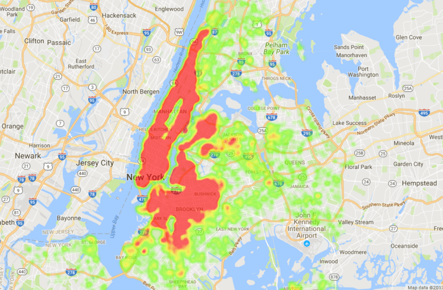
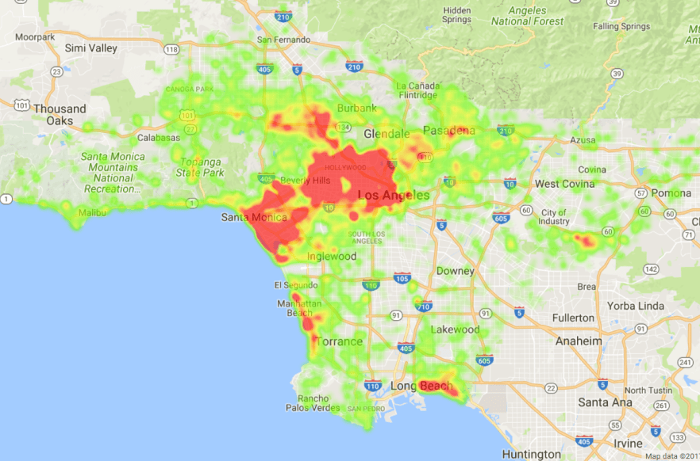
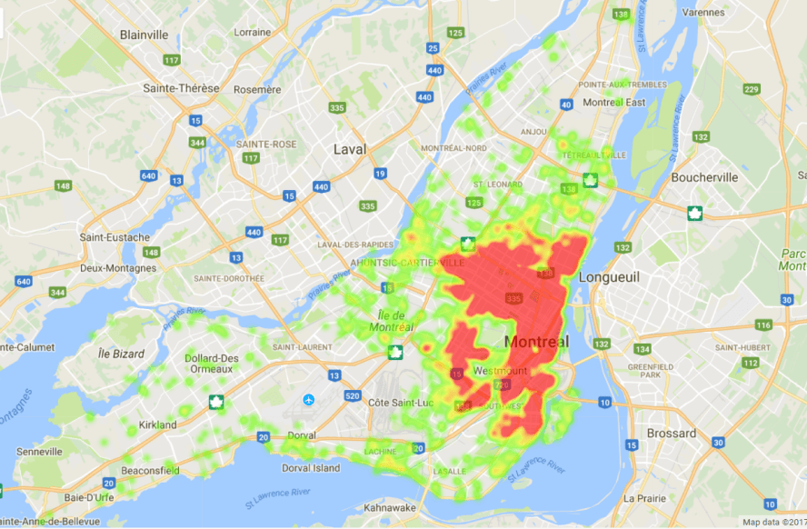
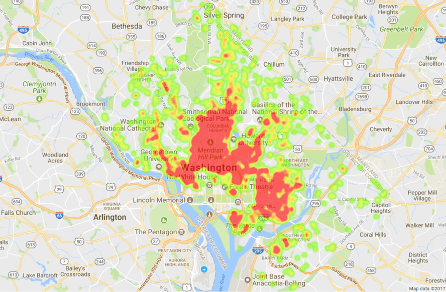

With the “big data phenomenon”, there is a growing need to be able to interpret a large set of data. That is why I tried visualizing the distribution of AirBnB listings in 43 different cities by building a web app.
Examples
New York City
Los Angeles
Montreal
Washington, D.C.
How it was built
1. Scraping the web
Fortunately, I was able to find enough data on this website. It contains a csv file for each of 43 different cities, which contains information about every AirBnB listing in that city, including their coordinates (latitude and longitude) and price.
Great, we found 43 csv files that contain all the data we need. Now, to actually extract information from these files, I could have downloaded each of them manually onto my computer. This sounds pretty tedious and messy, right? So instead, I decided to take advantage of the consistent HTML structure of the website to perform web scraping. For example, all the download links could be in the children of a certain tag; in which case you can just loop through all the children of that tag and obtain the csv file. Python has a great library to help you do this easily, called BeautifulSoup. The difficulty of this task really depends on how easily you can find a pattern in the HTML structure of the web page you are looking to scrape.
2. Creating a database
Now that we have all the csv files available for us to use, we can start creating a database. When I was working on the project, I had no knowledge in databases at all, so the database techniques that I used are not the most efficient.
That being said, I created a single table with four columns: city name, latitude, longitude, and price, and with each row representing a single listing.
Initially, creating the database took approximately 20 minutes, and I wondered why it was so slow. It turned out that I had one transaction for each operation. I reduced the time to less than a second by doing all operations in one transaction.
3. Building a web app
I decided to experiment with Django for this project since it is relatively well documented and it allows interaction with a databse.
The general user flow is that the user posts their query to the server, namely which city’s heatmap they want to see. Then the server extracts all listings from the database that are in the requested city and plots a heatmap.
In Django, we can interact with a database by creating a “model” object. It also allows us to configure different views based on whether the user had just submitted the query or not. If they have, my app will display the heatmap. If not, it will simply display a list of cities they can choose from to submit a query.
How do you plot a heatmap? Fortunately, Google Maps API has a neat feature in Javascript called a heat map layer, which you can lay on top of a map view. You simply need to supply a list of coordinates to plot on your end. That is all.
Rooms for improvement
This web app is certainly functional. However, it can definitely use a lot of improvement in the UI design and processing time. As of now, it can take up to 10 seconds to load a heatmap. This can definitely be sped up with a better database structure.
For example, adding indices on the city column would have saved a lot of time, since the app is always filtering by city. Furthermore, storing the city by id rather than the full name would make the filtering a lot faster, since integer comparison is more performant than string.
Furthermore, automatically keeping the database up to date would be a nice feature to add.